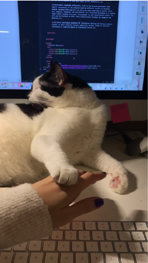

First Post
Evaluate The User Interface of Farfetch.com
I choose to evaluate the farfetch website (www.farfetch.com) not only because it is my often using website, but also it contains numerous of categories, and I really want to see how the website manages them.
Farfetch is an online shopping website, the target user includes women, men and kids all over the world, over 100 countries are available to choose, and multiple kinds of currency are available to pay.
The user interface of farfetch.com is clear and effective. Very fast opening and downloading speed, no need to wait when opening the website. Present only necessary information on the main page.
The navigation is visible and make it easy to go back and home page. Different categories have their own name and no misunderstanding.
